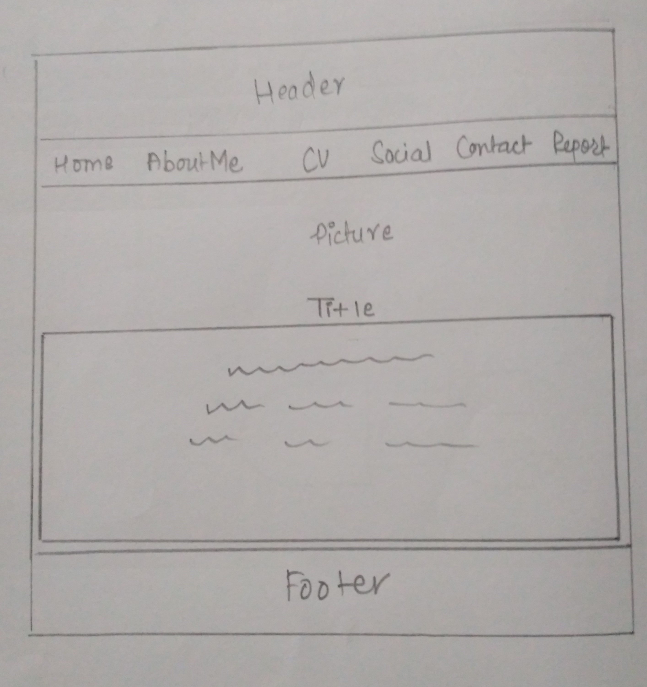
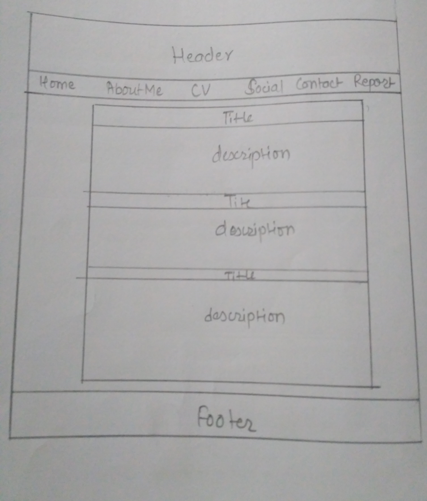
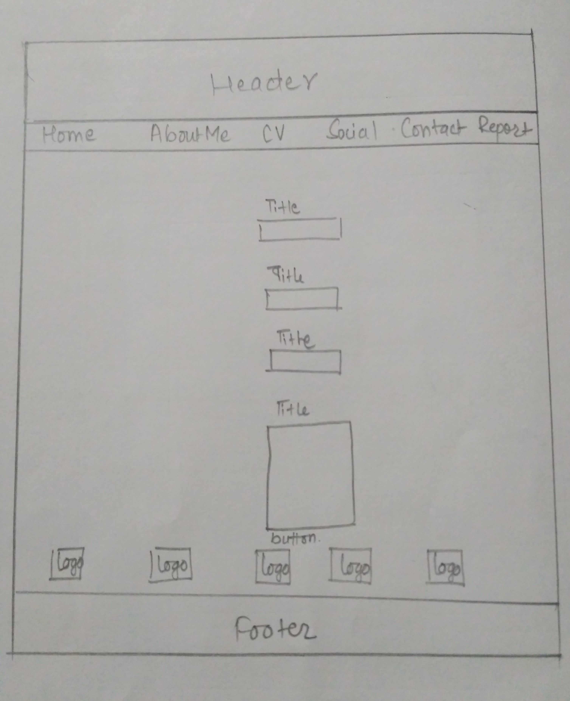
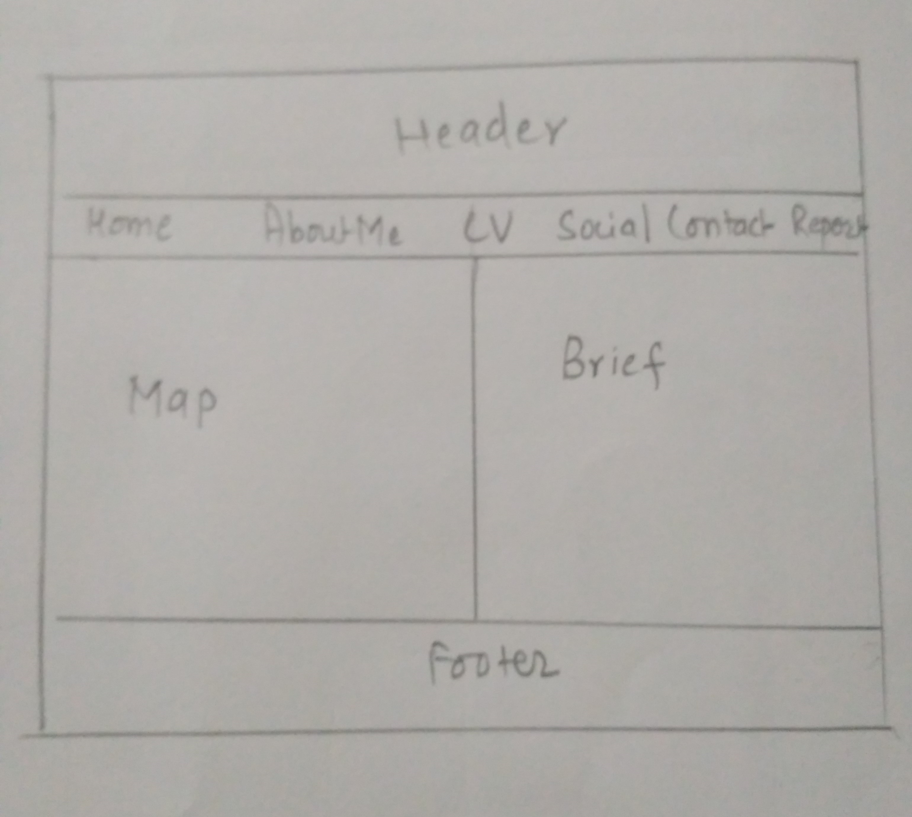
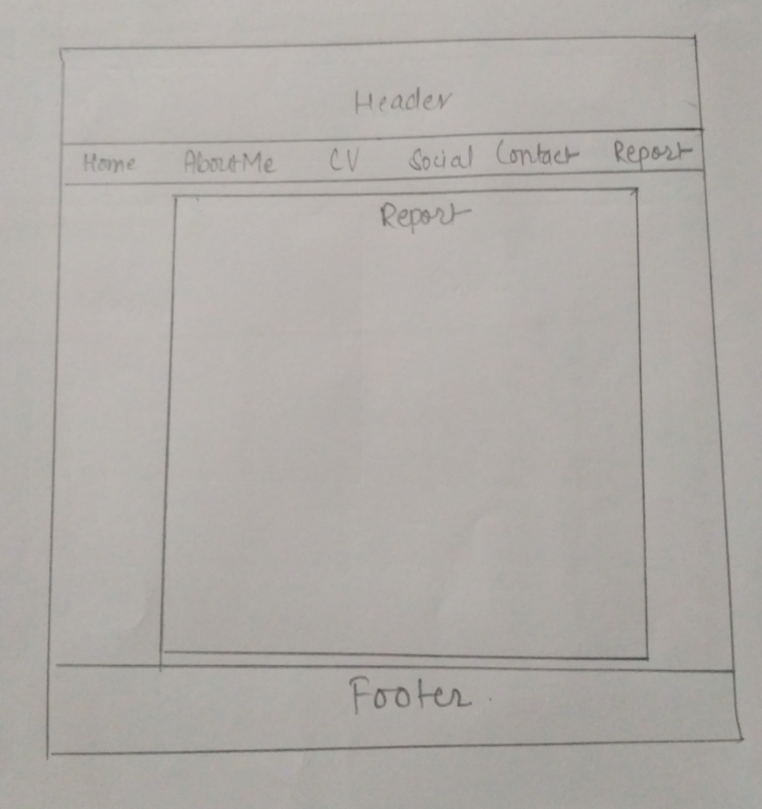
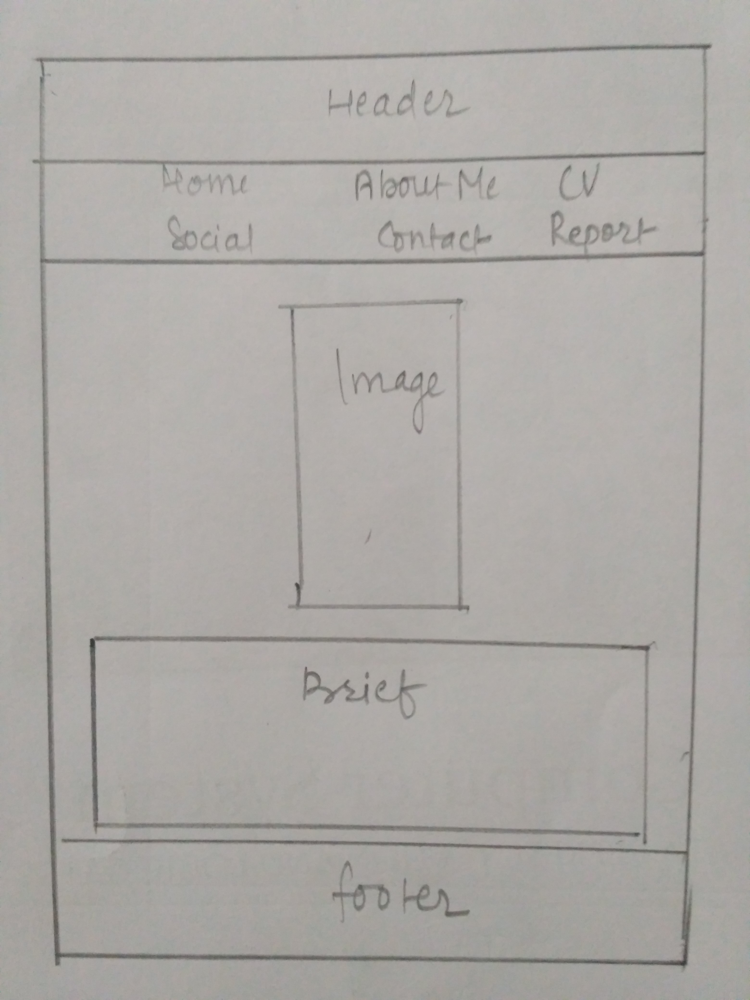
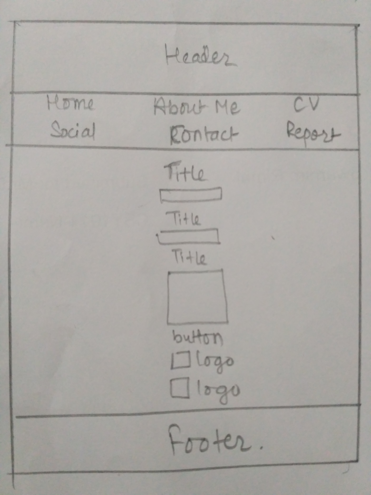

1.Intoduction
The project of module CSY1018 i.e Web Designing is very fun project.It provides students to play with their designing skils and show their potential in creating a website. Throughout our first semester we've been provided with all the basic knowledge about HTML and CSS3 properties.We've learned to use animations without the help of Javascript. With the help of the mentor and discussion with group of friends the website is created.The plans for creating website is explained in sequence down below.The brief about website overview and the designs as well as the contents inside the website is also mentioned.All of the instructions are implemented and design constraints are executed making the website very user-friendly.The webpages are responsive according to the required width of the device.Stepping into the technological era we have to be the source of creation. This project helped students to understand that coding not only gives sense of fulfilment but also, the motive to create something out of nothing.
The project of module CSY1018 i.e Web Designing is very fun project.It provides students to play with their designing skils and show their potential in creating a website. Throughout our first semester we've been provided with all the basic knowledge about HTML and CSS3 properties.We've learned to use animations without the help of Javascript. With the help of the mentor and discussion with group of friends the website is created.The plans for creating website is explained in sequence down below.The brief about website overview and the designs as well as the contents inside the website is also mentioned.All of the instructions are implemented and design constraints are executed making the website very user-friendly.The webpages are responsive according to the required width of the device.Stepping into the technological era we have to be the source of creation. This project helped students to understand that coding not only gives sense of fulfilment but also, the motive to create something out of nothing.
2.Design
2.1 For desktop
2.1.1 Design for Home page

2.1.2 Design for About page

2.1.3Design for CV page

2.1.4 Design for Social page

2.1.5 Design for Contact page

2.1.6 Design for Report page

2.2Design for Resonsive device
2.2.1 Design for responsive About page

2.2.1 Design for responsive Social page
